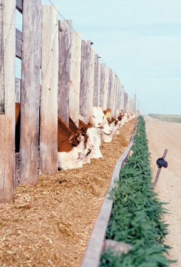

Beef from a cow raised on pasture is even healthier for you than a chicken breast - the white meat that health authorities are so quick to recommend.
That may be hard to believe, but it’s true, says Jo Robinson, grass-fed expert and author of the book Pasture Perfect.
The best place to start in describing the health benefits of grass-fed beef is with the meat’s leanness. Grass-fed beef is one-third to three times leaner than grain-fed beef, and as a consequence has fewer calories, too - a 6-ounce beef loin from a grass-fed cow can have 92 fewer calories than a 6-ounce loin from a grain-fed cow.
Grass-fed beef also provides two to four times more essential omega-3 fatty acids than feedlot beef. These omega-3s help protect humans from cancer, depression, obesity, diabetes, arthritis, allergies, dementia, high-blood pressure, irregular heartbeat, heart attack and stroke. Also in grass-fed products, omega-3s and omega-6 fatty acids are in balance, which provides critical protection from heart attacks and strokes.
Researchers have found grass-fed beef contains two newly discovered “good” fats: conjugated linoleic acid (CLA) and trans-vaccenic acid (TVA). (Our bodies turn TVA into CLA.)
CLA shows great promise in lab animal studies of helping fight cancers and cardiovascular disease. When cattle are raised exclusively on grass, their meat and dairy products offer two to five times more CLA than cattle raised on large amounts of grain.
Grass-fed beef also provides more beta carotene, vitamin E and folic acid, important antioxidants that protect us from free radicals, boost our immunity and may lower our risk of heart disease.
“What’s not in grass-fed beef that is in grain-fed beef is important, too,” Robinson says. Grass-fed beef has “no extra hormones and no traces of antibiotics - only cleaner and more wholesome meat than ordinary beef by far,” she says. Grass-fed animals also live a low-stress life, outside grazing on pasture, in contrast to the stinking, dusty, shadeless conditions in most feedlots.
In the livestock industry, feedlot cattle may be fed all kinds of products in addition to grain, including chicken manure, chicken feathers, newsprint, cardboard and municipal garbage waste. Cattle are even fed stale pizza crust, chewing gum and candy. Some companies will “feed these cattle anything that’s cheap, keeps them growing and is within hauling distance,” she says.
Robinson’s current favorite “horror” story is that of the hired feedlot manager who was told to give his cattle frozen pizza crust and add an antibiotic called tetracycline to boost the cattle’s growth. (Tetracycline is not approved for use in cattle.) The feedlot manager could buy the crust for a penny a pound, which was yielding 4 pounds of gain a day on each animal - “a huge gain for a penny. That’s the thinking of the industry,” Robinson says. But he quit, she explains, because he didn’t want his children having to eat meat like this. Now he owns and operates a 100-percent grass-fed herd and goes to farmer’s markets to sell the meat. Last spring, when he didn’t have any more meat for sale until 2006, he started a waiting list that ended up six pages long.
Robinson also notes there are very few nutritional differences between “certified organic” and feedlot beef, something many people don’t understand. “Currently to certify beef as organic, you simply have to give the cattle organic feed and refrain from using antibiotics and growth hormone implants. A lot of organic beef comes from animals that are fed organic grain in a feedlot. Although the meat will be ‘cleaner,’ it won’t be any more nutritious than feedlot beef. The cleanest, most nutritious beef comes from cattle that are both certified organic and grass-finished. Then you have the best of both worlds,” she says.
For true beef lovers, a grass-finished product is the gold standard. As soon as an animal is moved from pasture to grain, the health benefits associated with being grass-fed start to decline, Robinson says, and within three months “you can almost completely undo what you’ve done with the grass.”
Bovine Spongiform Encephalopathy (BSE, or more commonly, mad cow disease), has not been found in grass-finished animals. Mad cow is believed to be caused by feeding cattle pieces of brain and nerve tissue from other infected animals. (This practice was abolished in the United States in 1997.) When humans consume meat from animals with mad cow disease, they risk contracting its human form - Creutzfeldt-Jakob Disease. Mad cow disease has not been found among grass-finished animals because they eat forage materials exclusively.
Robinson says the U.S. mad cow case confirmed in June has prompted so much media attention that in just one month, more than 50,000 new visitors checked out her Web site, www.eatwild.com, which documents grass-fed health research and lists current producers. “I see the number of visitors rise with each mad cow scare - basically, it just goes up, hits a plateau, goes up, hits a plateau, goes up, hits a plateau ...”
There is another safety reason for eating meat from grass-finished cattle: It is less likely to be contaminated with acid-resistant forms of E. coli, a serious foodborne bacteria. E. coli from feedlot beef can be deadly. In the worst outbreak, an estimated 600 people became ill and three people died. U.S. researchers have found that high-grain diets make E. coli more virulent. When cattle are fattened on grain, their digestive tracts become unusually acidic and kill off most of the E. coli. The bacteria that survive are those that have adapted themselves to an acidic environment. This is a major problem for human health, because our first line of defense is the acidity of our own digestive juices. Acid-resistant feedlot bacteria can survive our gastric juices in sufficient number to make us ill. By contrast, the E. coli from grass-finished cattle remains sensitive to acid and is quickly destroyed in our stomachs. “Switching cattle from grass to grain to speed their growth has created a lot of unforeseen problems,” Robinson says.
It will be years before enough grass-finished beef can be produced to satisfy this new market, but serious efforts are under way to significantly boost production. Meanwhile, shoppers can find grass-finished meat right now if they know where to look and what to ask. (See “Consumer Advice & Cooking Tips.”)
According to Allan Nation, editor since 1977 of the grass-fed industry publication The Stockman GrassFarmer, although the latest round of consumer interest was triggered by the confirmation of the second U.S. mad cow, it was the December 2003 documentation of the first U.S. mad cow, coupled with the publication of Michael Pollan’s New York Times article on the beef industry (see “Cattle Futures,” April/May 2004), that, overnight, turned the grass-finished business sector into an industry.
For centuries, cattle have been raised on pasture. But in the United States today, “we have no collective memory of how to produce a quality grass-fed animal,” he says. “The whole current system is devised to add value to grain production. It shows the difference between the United States and Europe; farmers there produced food for their villages. When we got to North America, where it was 1,000 miles to the major population centers, you had to have a very high value product to absorb the transportation costs.”
Feedlot beef did that for a while, but the flaws finally are catching up with the system and helping move the sustainable grass-fed model forward. “Six years ago,” Nation says, “Jo Robinson and I could only find 40 grass-fed marketers in the whole United States and Canada. Today, there’s way over 1,000, and many of these are people who are selling meat from a dozen producers.”
The year 1999 was significant in terms of the grass-fed sector’s development, Nation says. At The Stockman GrassFarmers’ annual producers conference in Dallas that year, Robinson first detailed two “good” fats found in grass-fed beef - omega-3s and CLA (conjugated linoleic acid) - and their implications for human health. “She came with her little booklet Why Grassfed is Best and she started a riot,” he says. “She had 40 booklets and there were 500 people there. Today, we can track back almost everybody who is anybody in this industry to that meeting. They were the early pioneers.” (The updated edition of Robinson’s book is Pasture Perfect. To order, see Mother Earth Shopping.)
Before that time, grass-fed producers worked within the conventional arena - maintaining cow-calf herds, growing the calves up to about 850 pounds and then selling them to feedlots for grain finishing. After Robinson’s revelations, the concept turned to ‘Let’s go ahead and finish them on pasture.’
“It was a steep learning curve for everyone,” Nation says, noting grass-finished beef is now about 1 percent of the U.S. market. He predicts it will be about 10 percent in seven to 10 years; Robinson is estimating 5 percent.
“For it to come from nothing to 1 percent is pretty good,” Nation adds. “The U.S. wholesale beef market is $770 million, and it doubles that at retail, so 1 percent is $100 million. One of the things about being small and in a niche is the product is selling for a premium price, and that’s what makes it great for these small farmers.”
Nation says producers get the highest returns by selling grass-fed meat through farmer’s markets and other such direct-to-the-consumer venues.
“This can produce live-weight equivalent prices of $1.80 to $2 per pound,” he says. (Feedlot cattle currently sell for $1 to $1.40 per pound.) “Farmers and ranchers who direct market can often clear in excess of $1,000 per head on a 1,000-pound animal,” Nation says. Some grass-fed ranchers are getting more than $20 per pound for their most tender steaks and roasts. Liver can command that amount, too, because the liver from feedlot animals tends to have lesions - a result of feeding them too much grain, Robinson says.
Today, some of the long-established grass-finish production herds are getting quite large by earlier standards. Nation, who grew up in a family that raised cattle on pasture, notes he personally knows of herds that now number 800 to 1,500 head. Robinson says she recently has learned of some big new players waiting in the wings with significant amounts of money and plans for even larger herds - “50,000 head of cattle is what one group is aiming for.”
In terms of supply within the industry, she says, in order to finish cattle properly on grass, it takes excellent soil, a chain of forage, the right kind of animal and the right kind of slaughter. “Everything has to be right for it to be an excellent product, and there isn’t a school or an Extension agent to teach you the ropes. In fact, they’ll say you can’t do this. But when a producer gets everything right, the result will be meat as tender and delicious as any meat you’ve ever eaten. And then there are those hidden benefits - the fact that the meat is safe to eat and healthy for you, and that the animal was well-treated and respected. Industrialized meat can’t touch it.”
But not all grass-based ranchers are producing this high-quality meat, according to Robinson. That’s why how-to gatherings such as The Stockman GrassFarmer’s conferences and others (see “Resources”) are needed to help producers improve their grass-finished beef, and why Robinson has conducted taste tests to give producers feedback on how their meat can improve. The American Livestock Breeds Conservancy (ALBC) is conducting taste tests, too. Because of the inconsistency of the meat, consumers need to ask the right questions when they’re shopping for grass-fed products, and they may need to be patient as producers work to perfect their products. Nation says, “The grass-fed industry has to recreate its genetic pool and its own infrastructure. It’s like turning a big oil tanker around; it doesn’t turn on a dime.”
In the time period before feedlots, the cattle that did well on grass were the medium-sized English breeds developed for what Nation calls “a quality eating experience.” These included Angus, Hereford, Shorthorn and the ruby red Devon. But those breeds got too fat on grain in feedlots - producers were then encouraged to switch to slower-to-fatten animals, which they got by crossbreeding the old English cattle to big sires from such Continental European breeds as Charolais and Chianina (Key-a-nee-nah).
The strategy worked, Nation says, to the point that today, the old, pre-grain-fed genetics that work best for grass-finished systems are “rare as hen’s teeth.”
Don Bixby of the ALBC adds to the old genetics list Galloways, which were important range cattle in the 19th and early 20th century, and the dual-purpose Red Polls, which he calls “great grazers.”
Today, Robinson says, the really serious producers are investing heavily in new breeding stock. “Some are even bringing it from New Zealand and other areas where cattle never went off grass. They’re also bringing in cattle from Japan that have a lot of marbling on their frames. Other than that, people are scouring the country for little pockets of old, ‘line-bred’ English cattle.” Line breeding is a type of inbreeding that concentrates on a given ancestor with the goal of focusing its genetic impact on the whole herd.
In addition, they’re working on improving their soil and establishing a chain of forage grasses that will move the availability of fresh grass-fed products beyond just a spring and early summer season. “The seasonality issue is a function of perennial grasses,” Nation says. “Grass in the spring and early summer, we can finish cattle on easily; the problem with the United States is the summers are hot. When the temperature goes above 87 degrees, that perennial grass lignifies (turns woody), and the average daily gains of the cattle collapse.
“So, we have to produce at least 1.7 pounds per day of weight gain in order to have the animals develop enough fat for good cooking and eating quality. What you have to do is plan a series of forages; you can’t do it with just one grass. You would use your base perennial rye or orchard grass with clover, then swap those cattle that didn’t finish to soybeans or green-leaf corn or millet, or some sort of annual that doesn’t lignify. (The annuals don’t lignify because they’re not trying to survive to the next season.) On grazed soybeans, the cattle will gain more than 2 pounds a day in summertime; on grazed corn (just eating the green leaves), we can get about 3 to 4 pounds a day.”
Argentinians produce grass-finished beef year-round with the same predictability as feedlot beef and the same finish, Nation says. They grow a forage chain of 70 percent perennials; 20 percent winter annuals and 10 percent summer annuals. The seasonal availability of grass-finished beef also can be moderated by freezing a fresh supply during spring and early summer; the trick to preserving quality in that meat is proper thawing - which means slowly, in the refrigerator.
Lastly, producers must have their animals slaughtered at the right time - not too soon, as they need more time to mature on grass than feedlot cattle do on grain. The grass-fed animals, and then their carcasses, also must be handled properly, including keeping stress on the animals to a bare minimum and managing the cooling of the carcasses right after the animal is killed.
When cattle are butchered, the U.S. Department of Agriculture requires that the carcasses be cooled quickly. But the standards designed for the bigger, fatter feedlot cattle don’t work well for grass-fed meat. Cooling the carcass too quickly will stop the action of natural tenderizing enzymes.
“For the first two hours after the animals are killed, grass-fed beef should not be cooled,” Nation says. “We don’t know where we are right now with the USDA rules; a lot of butchers are willing to accommodate the grass-fed producers if they are major customers.”
Aging takes place after the carcass is chilled but not frozen, and Nation says aging cannot overcome the toughening that occurs if you chill the carcass too quickly. Traditionally, beef carcasses were dry-aged in coolers for at least a week or two. The dry-aging process allows natural enzymes to tenderize the meat, and the flavor is intensified as some of the water in the carcass evaporates. But this process takes time and cooler space and reduces the weight of the carcass, so today about 90 percent of all beef is no longer dry-aged.
Instead, producers wet-age the beef, placing large wholesale cuts in vacuum-sealed bags and shipping this in boxes (called “boxed beef”) to stores, where the meat ages in the bag, with no loss of water that would intensify the flavor, until it’s cut up and packaged for sale.
Most producers of grass-finished beef have their meat dry-aged, but most butchers (and the USDA rules) are geared toward handling fatter grain-fed carcasses. So again, there will be a learning curve as we rediscover how best to age beef raised on a natural grass diet.
Robinson says there is a tremendous need for USDA officials to get involved in supporting the research to learn more about the best ways to process grass-finished beef. “There’s every reason they should be. The fact that I had to go back into the 1970s to find any research on how to process grass-fed animals is criminal. It’s time everybody starts insisting their tax dollars go to support animal health and welfare, and human nutrition, rather than the feedlot industry. And it will happen if the public wants it to happen.”
Eat Wild
A clearinghouse for grass-fed information, featuring a comprehensive state-by-state list of producers.
The American Devon Association
Pasture Perfect
by Jo Robinson
Farm Fresh: Direct Marketing Meats & Milk
by Allan Nation
Holy Cows and Hog Heaven
by Joel Salatin
The Grassfed Gourmet Cookbook
by Shannon Hayes
Grass-Fed Cattle
by Julius Ruechel
(To be released in 2006.)
Feature articles and special sections on grass-fed production techniques abound in recent issues of specialty sustainable farming newsletters; some are tied to the availability of new resources on grass-fed practices being offered by the publishers of these newsletters. Among these are:
American Livestock Breeds ConservancyGrass-fed beef must be flavorful and tender as well as healthful if it is to become a staple in the kitchen. Sue Moore, meat forager for Chez Panisse Restaurant and Café in Berkeley, Calif., which regularly serves grass-fed beef, describes it as “more robust” than grain-fed beef, with a taste of the place where the cattle are grazed - the grasses and the minerals found in their pastures. “It goes along with the French concept of ‘terroir,’” she says, “or a sense of place. It’s the same reason that wines or olive oils taste differently.”
Moore says grass-fed fans are people who want “character in their beef.” For Chez Panisse, she searches out local sources, talking to producers, visiting their farms and finding out what they’re doing to make their products so appealing. “A lot of these producers are ‘beyond organic’,” she says, referring to the experience established graziers bring to the production of the best tasting and most healthful grass-fed beef today.
During the grass season, Chez Panisse buys two head of cattle every other week from Magruder Ranch in Mendocino County, Calif. The restaurant also buys particular cuts from Marin Sun Farms of Point Reyes, Calif.
The Magruder animals are slaughtered at the only remaining U.S. Department of Agriculture (USDA)-inspected slaughterhouse in the area and dry-aged at another nearby facility for 21 days before being served to customers in the restaurant and café. “In responding to the lack of infrastructure serving the small rancher, mobile abattoirs (slaughterhouses) are a bright spot on the horizon,” Moore says. “The art of butchering the animals is practically lost. Artisan quality [butchering] is needed. We need to resuscitate that.”
Because Chez Panisse is committed to using the whole animals from Magruder (not just the steaks), Moore says the restaurant chefs spend a good deal of time figuring out how to present all the different cuts. “For example, there’s only 4 pounds of skirt steak on any one cow. That makes it very difficult to offer skirt steak to 50 people. A lot of cuts go into hamburger.” Phillip Dedlow, a Chez Panisse chef who works mostly with the grass-fed beef, says the hamburger never goes on the restaurant’s menus even though people love the taste of Magruder Ranch ground beef. “We have orchestrated sales to friends,” he says.
In contrast to grass-fed beef, forager Moore adds, “grain-finishing tends to ‘homogenize’ the taste, to smooth the flavor over so it all tastes the same, and a lot of Americans want that.” Grass-fed beef lovers, on the other hand, want “excitement in their eating,” which translates to the subtle but definite flavor differences.
Dedlow says at Chez Panisse they tasted a lot of grass-fed beef before they settled on the ones they really liked: “You just have to keep looking.”
If you want to find a high-quality, reliable source of grass-fed beef, search first for locally produced grass-fed meat and do it during the grass-fed season - late spring and early summer.
Start by checking your natural food stores, food co-ops and farmer’s markets. Many grass-fed beef producers are marketing their products through such venues. Also, check with your county Extension office; across the country, offices often maintain lists of local farmers and the products they sell. The following Web sites allow you to key in your zip code or city and state to get many local listings: www.eatwild.com, www.localharvest.org and www.eatwellguide.org.
Eatwild.com, for example, provides a place for grass farmers to advertise their products. You can read about the criteria farmers must meet to be listed at Eatwild.com on the “Eatwild Pastured Products Directory.”
Watch out for the terminology. Until the USDA formally defines the terms associated with this kind of beef, you will find a variety of names used in the marketplace. “Grass-finished” is what you want to find; ask what “grass-fed” means; be suspicious of any others.
After you have compiled your list of potential local sources, you will want to check them out personally, much as Moore does for Chez Panisse. Ask plenty of questions about any product you may consider buying. Eatwild.com advises “Buyer Beware” and offers tips on “How to make sure you’re getting healthy, tender meat” at www.eatwild.com/tenderhealthy.html.
The grass-fed industry is growing so quickly that meat quality is uneven right now. Also, tastes do reflect the grasses and minerals in the pastures where animals are grazed, so differences may arise that have nothing to do with quality. The more questions you ask before you buy, the better your chances will be of getting meat that satisfies you.
If you’re not happy with your initial purchase from a particular source, go back and talk with that producer about your experience with his or her product. Try different sources in your area until you find one you like. Then, support that farmer to the best of your ability.
Proper cooking and, when necessary, thawing of high-quality grass-finished meat is important if you want tender eating.
If your meat is frozen, be sure to use it in a timely fashion and always thaw it slowly when you are ready to cook.
Because grass-finished meat is low in fat, it needs to be cooked with one eye on the clock. The leanness makes it vulnerable to drying out as it cooks, so the trick is not to overcook it.
Careful attention will give you tender meat with more “character of flavor” than any feedlot beef on the market.
|
Courtesy Oswald Cattle Co. Grass-finished beef is a hallmark of the Oswald Cattle Company, based at the foot of the Sangre De Cristo Mountains in Cotopaxi, Colo. |
Courtesy Sandy and Jim Brashears This grass-fed red Devon cow and calf are owned by Sandy and Jim Brashears, J&S Red Devon Cattle Ranch, De Soto, Kan. |
Karl Kirschner/Courtesy ALBC These calves are British Whites, one of the breeds considered well-suited to grass-fed meat production. |
|
 Brian Prechtel/Courtesy USDA ARS Feedlot production of beef relies on many practices that grass-fed beef producers reject. |
Bryan Welch Angus, particularly old-style Angus, is a breed well adapted to grass-fed production. |
Gurney Davis/Courtesy ALBC Devon cattle are considered especially well suited to grass-fed beef production; the breed is on the American Livestock Breeds Conservancy’s “critical” list, with an estimated global population of fewer than 2,000. |